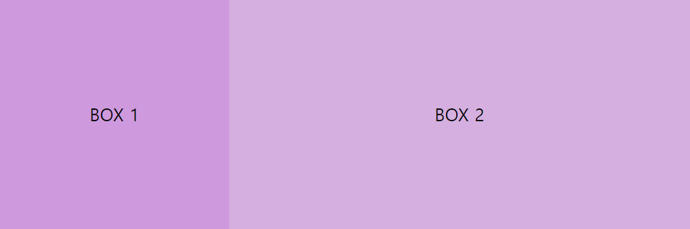
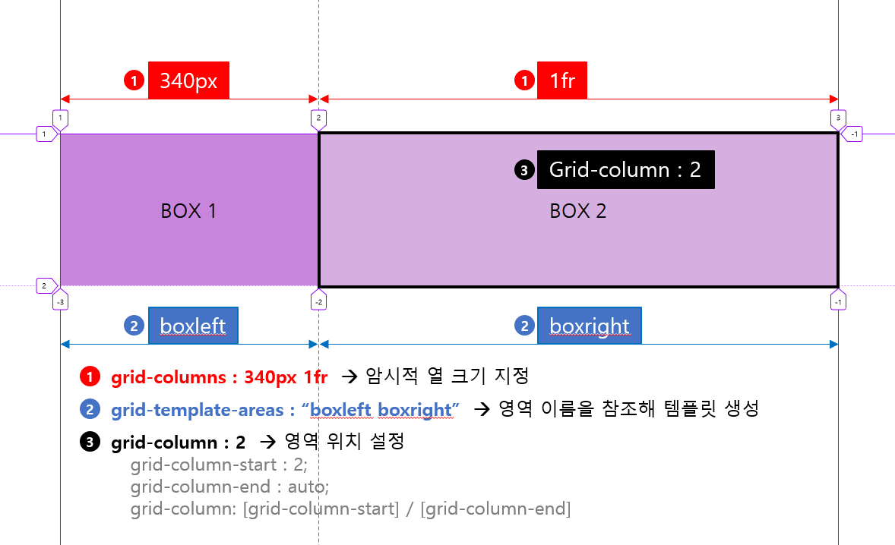

1주차 Layout Step 2
👋STEP 2 레이아웃 예시👋
height 고정
height 고정
최대 width값 1024px
body 내 중앙정렬
브라우저 크기 1024px 이하 시 크기에 맞게 줄어듦
-
1. inline-block
속성 설명 예제에서 사용된 속성 브라우저 서포트 inline-block inline과 block의 특성을 모두 지니고 있는 inlne-block은 inline 요소처럼 컨텐츠 만큼의 크기를 차지하여 나란히 배치되거나 block 요소처럼 사용가능한 전체 너비를 차지하며 한 줄 전체의 영역에 배치된다. - display: inline-block
- width: calc(100% - 340px)■ display: inline-block 다음을 제외하고 전체적으로 모든 브라우저에서 지원 가능
FIrefox(ver.2) partial support with prefix (-moz-)
IE(ver.6-7) partial support
지원브라우저 보러가기
■ clac() 다음을 제외한 대부분의 공식 최신브라우저에서 호환
IE(ver.9-11) partial support
Opera Mini not supported 지원브라우저 보러가기BOX 1BOX 2box 1의 너비값은 340px 고정이므로 box 2이 유동적인 너비값을 갖기 위한 여러가지 방법 중 %를 사용할 수 있다. (유동적인 영역의 너비 / 전체 너비) * 100% 의 공식으로 계산할 수 있으며 해당 식을 간편하게 사용할 수 있도록 calc() 함수를 사용하였다.
.layout_01 .box.right { width: calc(100% - 340px) }calc() 함수의 괄호 안에 100%-상대영역의너비값 주어 계산하면 자동으로 유동적인 너비값을 갖게된다. (이 때 주의할 점은 사칙연산 기호 양쪽에 공백을 두어 띄워쓰기하여 작성해야 한다.)
-
2. table
속성 설명 예제에서 사용된 속성 브라우저 서포트 table display: table 속성은 다수의 아이템을 일정하게 정렬하려고 할 때 많이사용되는 방법으로 요소에 table의 성질을 갖게한다.
- [부모요소] diplay: table 로 선언함과 동시에 너비를 잡아주고
- [자식요소] display: table-cell을 선언하여 table의 td 요소처럼 작동하게 한다.- display: table
- display: table-cell
- min-width■ display: table 다음을 제외하고 전체적으로 모든 브라우저에서 지원 가능
FIrefox(ver.2) partial support
IE(ver.6-7) not supported 지원브라우저 보러가기
■ min-width 예제에서 사용한 속성은 모든 브라우저 지원 가능하나 auto, stretch, fit-content, max-content, min-content, fit-content 는 부분적 지원또는 지원불가한 경우도 있으니 확인해야함. 지원브라우저 보러가기BOX 1BOX 2배치하려는 박스들의 부모요소에 display:table 적용 후 고정 값을 갖는 박스에 width값을 주면 나머지 박스는 너비값을 자동으로 갖게 된다.
ie에서 .box span의 position 위치가 적용되지 않는 이슈가 있었다.
이유는 포지션 absolute가 적용되어 있는 부모요소에 table-cell이 적용되어 있다면 해당 요소로 relative가 적용되어 위치가 맞지 않다는것.
absolute하는 바로 상위 요소에 div를 적용하고 해당 박스에 position: relative를 적용시킨다.
증말.... @.@
-
3. position
속성 설명 예제에서 사용된 속성 브라우저 서포트 position position 속성은 HTML 요소가 위치를 결정하는 다음의 4가지 방식을 설정한다.
- static position(정적위치) : HTML요소의 위치를 결정하는 가장 기본적인 방식으로 top, right, bottom, left 속성값에 영향을 받지 않음. 단순히 웹 페이지의 흐름에 따라 차례대로 요소들을 위치시킨다
- relative position(상대위치) : HTML요소의 기본 위치 기준으로 위치 설정
- fixed position(고정위치) : 뷰포트(viewport)를 기준으로 위치를 설정
- absolute position(절대위치) : 고정위치가 뷰포트를 기준으로 위치를 결정하는 것과 비슷하게 동작하나, 단지 뷰포트(viewport)를 기준으로 하는 것이 아닌 위치가 설정된 부모요소를 기준으로 위치를 설정- position: relative
- position: absolute
- left: 0
- right: 0
- width: calc(100% - 340px)다음을 제외하고 전체적으로 모든 브라우저에서 지원 가능하다.
- Opera Mobile(ver.12-12.1) not supported
지원브라우저 보러가기BOX 1BOX 2box 1과 box 2의 코드를 살펴보면, 각각 340px과 684px 고정값으로 좌, 우에 나란히 배치되어 있다.
.layout_03 .box_wrap_01 .box.left{ width:340px }
.layout_03 .box_wrap_01 .box.right { width:684px }넓은 화면에서 보기에 문제가 없어보이나 브라우저 화면을 줄이게 되면 box 2의 너비가 px로 고정되어 있기 때문에 다음과 같이 box 2가 box 1을 넘어가 버리게 된다.
.box.right의 width값을 clac()함수를 이용하여 유동적인 너비값을 갖게하면 해당 현상은 사라진다.
.layout_03 .box_wrap_02 .box.right { width: calc(100% - 340px) }BOX 1BOX 2 -
4. flex
속성 설명 예제에서 사용된 속성 브라우저 서포트 flex flexible box는 flex box라고도 불리며, CSS3에서 처음 소개된 레이아웃 모델로써 서로 다른 크기의 화면과 기기에서도 HTML 요소들이 자동으로 재정렬되어, 웹 페이지의 레이아웃을 언제나 똑같이 유지할 수 있도록 함
- flex box를 위해 제공되는 속성은 display, flex-direction, justify-content, align-items, flex-wrap, flex-flow, align-content
- flex item을 위해 제공되는 속성은 order, align-self, flex■ display: flex
■ flex-direction: row
■ flex-basis
- flex-basis로 지정할 경우 flex-direction 속성 값에 따라서 row일 경우에는 width값을 column일 경우에는 height값을 설정하게 됨
- flex-basis와 width를 동시에 적용할 경우 flex-basis가 우선순위를 갖게 됨■ display: flex 대부분의 공식 최신브라우저에서 호환되고 있으나 IE(ver.10 / 11)에서는 부분적으로 지원 가능하다.
- IE(ver.11) partial support
- IE(ver.10) partial support with prefix (-ms-)
지원브라우저 보러가기
■ flex-direction 최신 브라우저에서 호환되고 있으나 하위 버전의 브라우저에서는 지원 불가 지원브라우저 보러가기
■ flex-basis 최신 브라우저에서 호환되고 있으나 하위 버전의 브라우저에서는 지원 불가 지원브라우저 보러가기
BOX 1BOX 2.layout_04 .box_wrap { display: flex; flex-direction: row }
.layout_04 .box.left { flex-basis: 340px }
.layout_04 .box.right { flex: auto } -
5. grid
속성 설명 예제에서 사용된 속성 브라우저 서포트 grid grid는 2차원(행과 열)의 레이아웃 시스템을 제공 함. flexible box는 1차원 레이아웃을 위한 속성이지만 grid는 좀 더 복잡한 레이아웃을 위해 사용 가능.
flex와 마찬가지로 아이템을 감싸는 부모요소(컨테이너) 안에서 아이템을 배치 할 수 있다.
MDN WEB DOCS 보러가기 HEROPY Tech의 css grid 완벽가이드■ display: grid
■ grid-template
- 컨테이너에 Grid 트랙의 크기들을 지정해주는 속성
- grid-template-rows는 행(row)의 배치
- grid-template-columns는 열(column)의 배치
- 여러가지 단위를 섞어 사용 가능
grid-template-columns: 1fr 1fr 1fr
grid-template-columns: repeat(3, 1fr)
grid-template-columns: 200px 1fr
grid-template-columns: 100px 200px auto
대부분의 공식 최신브라우저에서 호환되고 있으나 그 이하 버전에서는 부분적 지원이나 지원 불가의 경우도 많으므로 사전에 호환여부를 파악해야 함 웹 IE(ver.10 / 11)에서는 부분적으로 지원 가능하며 모바일 Opera Mini는 지원불가
■ display: grid
- IE(ver.11) partial support with prefix (-ms-)
- IE(ver.10) partial support with prefix (-ms-)
- Opera Mini not support
- Opera Mobile(ver.12-12.1) not support
- Android Browser(ver.2.1-4.4.4) not support
■ grid-template
- IE(ver.6-10) not support
- IE(ver.11) not support
지원브라우저 보러가기BOX 1BOX 2.layout_05 .box_wrap { display: grid; grid-template-columns: 340px 1fr }" fr "은 숫자 비율대로 트랙의 크기를 나눈다.
위에서는 grid-template-columns: 340px 1fr 이 적용되어 있으므로 2개의 트랙 중 첫번째 트랙은(1열;box1)은 340px의 너비값을, 두번째 트랙은(2열;box2) [ 1 : 1 = 340px : auto ] 의 비율로 유연하게 움직이게 됨.
하지만 위의 코드만으로는 IE 11에서 적용되지 않는다.😣
[크로스브라우징] grid 속성을 IE 11에서 적용해보기▶ IE에서 grid 적용을 위해 필요한 것들
vendor prefix (-ms-)
- Grid Container Properties
-ms-grid-columns : 암시적인 열(Track)의 크기를 정의
grid-template-areas : 영역(Area) 이름을 참조해 템플릿 생성- Grid Item Properties
-ms-grid-column : grid-column-xxx의 단축 속성(열 시작/끝 위치)
grid-area : 영역(Area) 이름을 설정하거나, grid-row와 grid-column의 단축 속성Grid 컨테이너에 적용할 속성은 grid-columns, grid-template-areas 이며
Grid 아이템에 적용할 속성은 grid-column, grid-area 이다.
1. [컨테이너] box1은 340px 고정 너비값을 갖고 box2는 유동적인 너비값을 갖기 위해 grid-columns: 340px 1fr 을 적용한다.
2. [컨테이너] grid-template-areas 속성을 사용해 box1, box2의 영역 이름을 "boxleft boxright"라고 정의한다.
ㄴ boxleft는 340px의 값을, boxright는 1fr의 값을 갖게 된다.
3. [아이템] .box.right 영역에서 boxright의 위치를 시작위치:2, 끝나는위치 auto로 설정하여 배치한다. 예제에서는 축약형으로 사용하였다.
4. [아이템] .box.right 영역에서 grid-area속성을 사용하여 boxright의 영역 이름을 참조한다.
위 내용을 코드로 나타내 보면,
.layout_05 .box_wrap { display:-ms-grid; display:grid; -ms-grid-columns: 340px 1fr; grid-template-columns: 340px 1fr; grid-template-areas: "boxleft boxright" }
.layout_05 .box.right { -ms-grid-column: 2; grid-area: boxright }
Vendor Prefix를 자동으로 변경해주는 사이트 💘Autoprefixer 바로가기
-
6. float
속성 설명 예제에서 사용된 속성 브라우저 서포트 float float 속성은 원래 이미지와 텍스트 배치 용도로 등장했지만, 요즘에는 레이아웃용으로 많이 사용하고 있음.
- inherit : 부모 요소에서 상속
- left : 왼쪽에 부유하는 블록 박스를 생성. 페이지 내용은 박스 오른쪽에 위치하며 위에서 아래로 흐름.
- right : 오른쪽에 부유하는 블록 박스를 생성. 페이지 내용은 박스 왼쪽에 위치하며 위에서 아래로 흐름. 이후 요소에 clear 속성이 있으면 페이지 흐름이 달라짐. none 이 아니라면 display 속성은 무시된다.
- none : 요소를 부유시키지 않음
- float: left
- clear: both
- width: calc(100% - 340px)다음의 경우를 제외하고 대부분의 공식 최신브라우저에서 호환되고 있다
- Android Browser(ver.2.1-4.3) not support
지원브라우저 보러가기BOX 1BOX 2- px로 고정되어 있는 box 2의 너비값을 calc()함수를 사용하여 유동적인 너비를 갖도록 한다.
- float 선언 시 영역에서 부유(floating)한 아이템으로 인해 부모의 높이값이 사라지는 이슈가 있으므로 부모요소의 영역 끝부분에 가상요소(Pseudo-Element) ::after 를 추가하여 float 되어있는 요소를 clear한다.
- 가상요소는 하위브라우저와의 호환성을 위해 단일콜론 사용 (:)